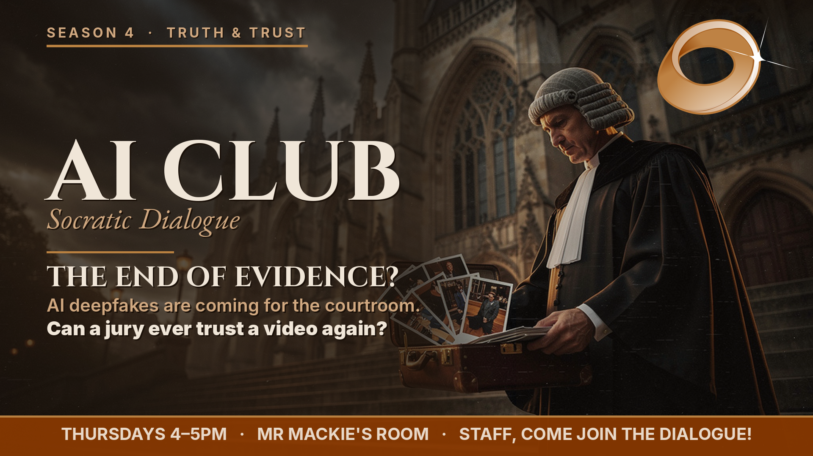

When seeing is no longer believing
For most of the last century, a photograph or a video was treated as close to proof. Recordings could be faked, but faking them was slow, costly, skilled work, and a careful eye could usually catch it. Because faking was hard, trusting was reasonable. Generative AI has broken that arrangement. Convincing fake video, cloned voices, and invented photographs are now cheap, fast, and difficult to detect. The obvious danger is that people will be fooled by a fake. The more interesting danger is quieter, and it is what this session is about.
The philosopher Regina Rini argues that recordings have long done a hidden job: they keep people honest. A witness is less likely to lie if a camera might have caught the truth, so the mere possibility of a recording disciplines what people are willing to claim. Rini calls this the epistemic backstop. Her warning is that deepfakes do not only let liars manufacture footage. They quietly lower the value of every recording. Once any video could be fake, video stops being something we trust directly and becomes something we trust only as much as we trust whoever supplied it. A recording starts to behave like testimony rather than proof.
This leads to a twist that the legal scholars Danielle Citron and Robert Chesney named the liar's dividend. The threat is not only that a fake will be believed. It is that a real recording can now be waved away. Someone genuinely caught on camera can simply claim "that is a deepfake," and a doubtful audience may let them go. Stranger still, this escape route grows wider the more people know that deepfakes exist, which means a lesson like this one is, in a small way, part of the problem. Recent research by Kaylyn Schiff and colleagues suggests the effect is real but not a magic shield: a false "that's fake" claim sways opinion more easily about written claims than about video, and does not collapse trust in everything at once.
Not everyone thinks this is a disaster. The philosopher Joshua Habgood-Coote argues the panic is overblown, because we have always judged recordings by their source and context, not the pixels alone. That disagreement is the position you will test in the debate.
So what could rebuild trust? The leading idea is provenance: systems such as C2PA Content Credentials attach a tamper-evident record of where a file came from and how it was edited. Provenance has a hard limit, though. It can show where something came from, not whether it is true, and a single screenshot strips the record away. Detection tools, meanwhile, fight a constant arms race with the fakers, and none is right every time.
Every link below was checked against the real source before it went here. AI tools (this club's bots included) can invent convincing-looking citations. Click-check anything before you rely on it — "I verified the source myself" is exactly the habit this session is about.